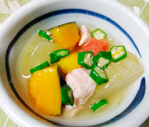

冷たい炊き合わせ
- 調理時間：40 分
- （一人当たり）
- カロリー：139kcal
- たんぱく質：8.9g
- 脂質：0.9g
- 炭水化物：24.5g
- 塩分：1.8g


＜2人分＞
- 冬瓜（正味）
- 300g
- ・だし汁
- 400ml
- ・砂糖
- 大さじ1/2
- ・みりん
- 大さじ1/2
- ・塩
- 小さじ1/2
- ・薄口醤油
- 大さじ3/4
A
- 鶏肉
- 50g
- カボチャ
- 100g
- ニンジン
- 30g
- オクラ
- 1本
- 片栗粉
- 大さじ1/2
- 生姜汁
- 適宜


- 冬瓜は4つ割りにしてスプーンで種をとり、4㎝長さ、3㎝幅に切って皮をむき、硬めに塩ゆでする。
- カボチャは一口大に切り、600wで１分半～2分を目安に電子レンジで加熱する。
- ニンジンは花型に型抜きする。
オクラは塩ゆでして小口切りにする。
鶏肉は一口大に切り、料理酒（分量外）を振っておく。 - 鍋にAの煮汁と冬瓜を入れて火にかける。
途中で鶏肉、ニンジンを加えてさらに煮る。
冬瓜がやわらかく煮えたら、汁を別鍋にとる。 - 汁を一煮立ちさせ、片栗粉を同量の水で溶いた水溶き片栗粉を加えてとろみをつける。
生姜汁をお好みで加える。 - ⑤を冬瓜の鍋に移して、カボチャ、オクラを加えて一煮し、そのまま冷やす。
冷えたら器に盛り付け完成。
冷たい炊き合わせ
冬瓜の旬は夏ごろですが、貯蔵性が高く冬まで保存できたことから「冬の瓜」と書いて冬瓜と呼ばれるようになりました。未熟なうちは果皮全体に産毛が生えていますが、完熟すると全体が白い粉（ブルーム）で覆われます。お店で選ぶときは、しっかりと重みがあり、ブルームに覆われているものを選びましょう。冬瓜は大きくて使いきれないという声もありますが、「姫とうがん」や「小冬瓜」の品種は、ミニ冬瓜ともいわれ、重さが１～２㎏で扱いやすく魅力的。水分やカリウムが比較的多いので、夏ばて予防にもおすすめです。